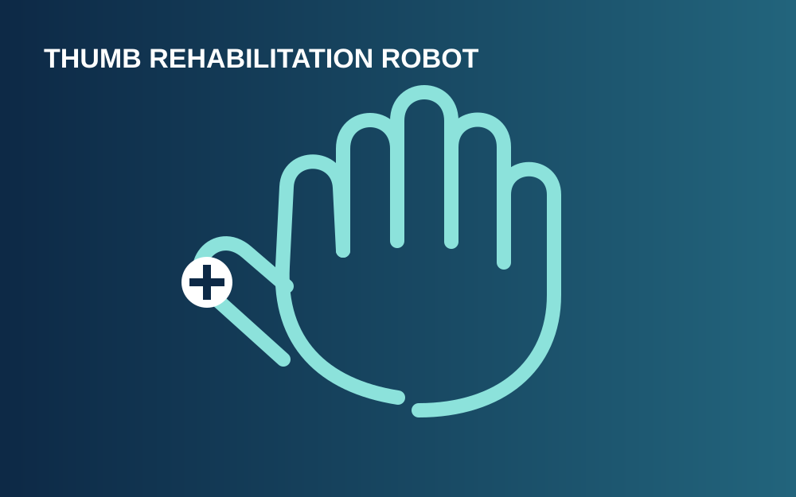

Research project
Thumb Rehabilitation Robot
Co-designed a portable rehabilitation device and game interface to help stroke patients practice guided thumb movement.
Biomedical roboticsRehabilitationArduinoDevice design
Project overview
The project investigated a portable, game-controller-style robotic device for thumb rehabilitation after stroke. It combined mechanical device design, a simple game interface, and Arduino control.
My contributions
- Participated in the design of a portable thumb rehabilitation device.
- Developed an easy-to-use game interface for thumb-positioning exercises.
- Programmed control algorithms using Arduino.
Technical approach
The device connects physical thumb movement with an interactive game. The design emphasizes portability and ease of use, supported by embedded control.
Images & documentation

Project video
Project videoExperiment and demonstration footage will be added here.